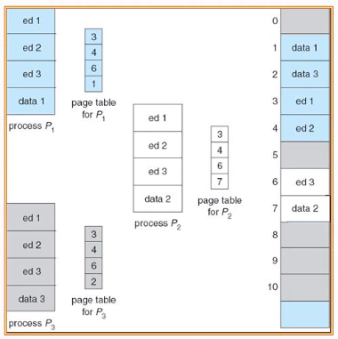

Swapping
Administración de memoria

Una estructura de tabla de páginas con tres niveles, formada por los siguientes tipos de tablas: Directorio de páginas: un proceso activo tiene un solo directorio de páginas que es del tamaño de una página. Para un proceso activo, el directorio de páginas tiene que estar en la memoria principal. Directorio intermedio de páginas: puede ocupar varias páginas y cada entrada de este directorio apunta a una página de la tabla de páginas. Tabla de páginas: cada entrada de la tabla de página hace referencia a una tabla virtual del proceso

Un sólo espacio de direcciones para instrucciones y datos, se tienen conflictos cuando alguno de los espacios empieza a crecer. Solución utilizada en la PDP-11 fue separar los espacios de instrucciones (espacio I) y los datos (espacio D). Ambos espacios de direcciones se pueden paginar de manera independiente. Cada uno tiene su propia tabla de páginas.

- El espacio de direcciones lógico de un proceso puede ser no contiguo. - Se divide la memoria física en bloques de tamaño fijo llamados marcos (frames). - Se divide la memoria en bloques de tamaño llamados páginas. Se mantiene información en los marcos libres.
Un mismo programa sea ejecutado por varios usuarios al mismo tiempo, se usa la compartición de páginas para evitar tener dos copias de la misma página. Cada proceso tendrá dos apuntadores en su tabla de procesos: uno para la tabla de páginas del espacio I y otro para la tabla de páginas del espacio D. Para compartir datos, UNIX en una llamada a fork, hace que el padre y el hijo compartan tanto el texto del programa como los datos. Ambos espacios se marcarán como sólo lectura.